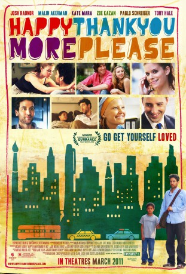

#7558 Happythankyoumoreplease
 
 IMDB-Wertung: 6.8 / 10
IMDB-Wertung: 6.8 / 10  Metascore: 0
Metascore: 0 
Eine Gruppe junger New Yorker mit dem Leben, der Liebe und dem Älterwerden konfrontiert: Der Autor Sam freundet sich mit einem kleinen Jungen an, der in der U-Bahn von seiner Familie getrennt wurde und verliebt sich in die Cabaret-Sängerin Mississippi. Sams beste Freundin Annie leidet an einer seltenen Krankheit, durch die ihr am ganzen Körper kein Haar wächst, während die Beziehung von Charlie und Mary durch einen bevorstehenden Umzug nach L.A. auf die Probe gestellt wird.Gewinner des Publikumspreises auf den Sundance Festival 2010
Jahr: 2010
Dauer: 98 Minuten
FSK: 0
Land: USA Studio: Anchor Bay FilmsTonspuren: DTS - ,
Untertitel:
Auflösung: 1080p (1920x800) Größe: 4915 MB
Genre: Drama, Komödie, Liebe
Regisseur: Josh Radnor
Drehbuch: Josh Radnor
Soundtrack:
Darsteller:
 Malin Akerman als Annie
Malin Akerman als Annie- Michael Algieri als Rasheen
 Dana Barron als The Gynecologist
Dana Barron als The Gynecologist- Sunah Bilsted als Receptionist
 Tony Hale als Sam #2
Tony Hale als Sam #2 Richard Jenkins als Paul Gertmanian
Richard Jenkins als Paul Gertmanian Zoe Kazan als Mary Catherine
Zoe Kazan als Mary Catherine Kate Mara als Mississippi
Kate Mara als Mississippi- Laith Nakli als MTA Worker
- Katharine Powell als Girl Leaving Apartment
- Jimmy Gary Jr. als Police Officer
- Josh Radnor als Sam Wexler
- Peter Scanavino als Ira
 Pablo Schreiber als Charlie
Pablo Schreiber als Charlie- Fay Wolf als Beth
- Lina Carollo als Restaurant Patron , uncredited
- Todd DiCiurcio als Rasheen's Artwork , uncredited
- Vincent Farr als Bar Patron , uncredited
- Patricia Hodges als Social Worker , uncredited
- Bram Barouh als Spencer
- Marna Kohn als Melissa
- Maria Elena Ramirez als Jill
- Maryann Urbano als Social Worker
- Nicolina Capitanio als Girl Playing in Park , uncredited
- Vin Hamilton als Background , uncredited
- Robert Rossi als Boy on Park Bench , uncredited
- Christiana Simon als Girl in Bar , uncredited
Datei: X:\2010(G-M)\Happythankyoumoreplease (2010, FSK0, 1920x800).mkv seit 20.11.2017
Festplatte: HD 2010(G-Z)-2011(A-F)
 Es gibt insgesamt 85 Filme in der Gruppe '2010(G-M)'
Es gibt insgesamt 85 Filme in der Gruppe '2010(G-M)'